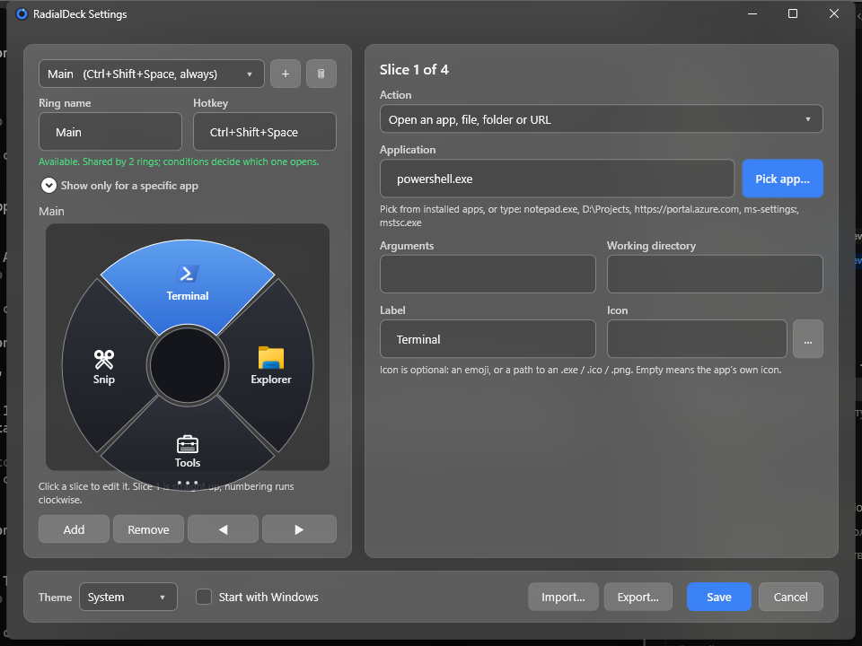
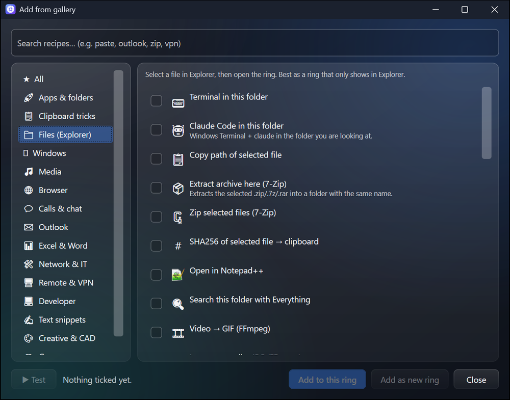

Mouse buttons
Side buttons, the middle button, or hold the right one. A quick right click is still a right click.
Every feature, shown moving
Hold a key or a mouse button, flick toward a slice, let go. Every demo below is drawn in your browser with the same ring RadialDeck draws on Windows.
01 · The gesture
Every slice is one short flick away, always in the same direction. After a few days you stop looking.
Hold the hotkey, move toward a slice, let go. A slice can hold another ring, which opens right under the cursor, so a choice three levels deep is still one stroke.
Up is the top slice, right the right one, two arrows together pick the diagonal, Enter runs it. Your hands never leave the keyboard.
With the ring open, type the first letters of a label and that slice lights up. Any keyboard layout, Cyrillic included, and the letters never reach the app underneath.
Side buttons, the middle button, or hold the right one. A quick right click is still a right click.
Shift+click runs a slice and keeps the ring open for the next one.
Games, films and slideshows get their keys back until you leave full screen.
02 · Knows where you are
Before it draws anything, RadialDeck looks at the window in front: which program, which files are selected, what text is highlighted.
Outlook gets Reply and your templates, Explorer gets Extract and Terminal here, Excel gets Sum and Freeze panes. The gesture stays the same; the ring follows the program.
Select files in Explorer or on the desktop and flick: extract, zip, hash, convert, a terminal in that folder. Commands get the selection as {file}, {dir}, {name}.
Open the ring over a program the gallery knows, from Excel and Teams to VLC and Blender, and RadialDeck offers a ring built for it. One click and it is yours.
{selection} is what you highlighted: search it, translate it, send it to a script.
If the program is already open, the slice brings it to the front instead.
03 · What a slice does
A slice is an action, and any action can sit in any ring.
Programs, files, folders and websites, with their own icons. Drop a program on the ring in Settings and it becomes a slice.
Point at Volume, Zoom, Tabs or Track and turn the mouse wheel; the ring stays open while the value changes. A click mutes, resets the zoom, opens a tab or pauses.
One slice shows the windows you have open as a ring. Flick to one and it comes to the front, minimised or not.
Mark any area and the text in it lands on the clipboard: screenshots, scanned PDFs, error dialogs. It uses the OCR built into Windows, so nothing leaves your PC.
PowerShell or cmd, hidden, with the clipboard in and the result pasted.
Any chord, media keys included, sent to the right window.
Replies, signatures and addresses, pasted in one flick.
Keys, text, pauses and clicks in a row, and a slice that repeats the last one.
Pin the window in front above the others, and unpin it the same way.
04 · Clipboard and text
Copy, flick, paste. The transforms are built in, so nothing starts up behind them and they work offline.
Plain text, UPPER case, links without tracking, pretty JSON, sorted and de-duplicated lines, every e-mail address in a text, Base64, Latin to Cyrillic and back, word counts.
One slice opens the last things you copied; flick to one and it is pasted. Kept in memory only, never on disk, and gone when you quit.
05 · Make it yours
Build rings in Settings with a live preview, start from the gallery, and pass the good ones around.
Glass, Neon, Synthwave, Windows 7 Aero, Minecraft, Blueprint, Vault and more, with patterns, glow and their own fonts. Or make your own in the theme studio.
The Share button copies a link with the whole ring inside. Whoever opens it sees every slice first, then adds it unsaved, looks it over and presses Save.


Pin a slice to a direction and it keeps it when others come and go.
Programs bring their own icons; the ring goes from 70 to 150 percent.
From English and Bulgarian to Japanese and Korean.
06 · Teams and scripts
It installs quietly and does what the script says.
--menu "Name", --reload, --pause from AutoHotkey, a Stream Deck or any script.
--config \\server\rings.json points every machine at one file.
Per user without an admin prompt, or machine-wide; works with Intune.
Edit it by hand and the ring updates; a mistake keeps the last good ring.
07 · Light and private
Written in C# for Windows, with no browser engine inside, and it keeps to itself.
Nothing about you or your rings leaves the PC.
The keyboard hook exists while the ring is on screen and records nothing.
About 57 MB of memory at rest, and the ring is up before your hand moves.
New versions arrive quietly and apply at the next start.
Free for two rings, forever. Windows 10 1809+ and 11. A 56 MB download, no runtime to install.
Download for Windows